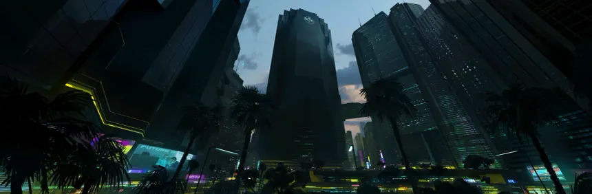
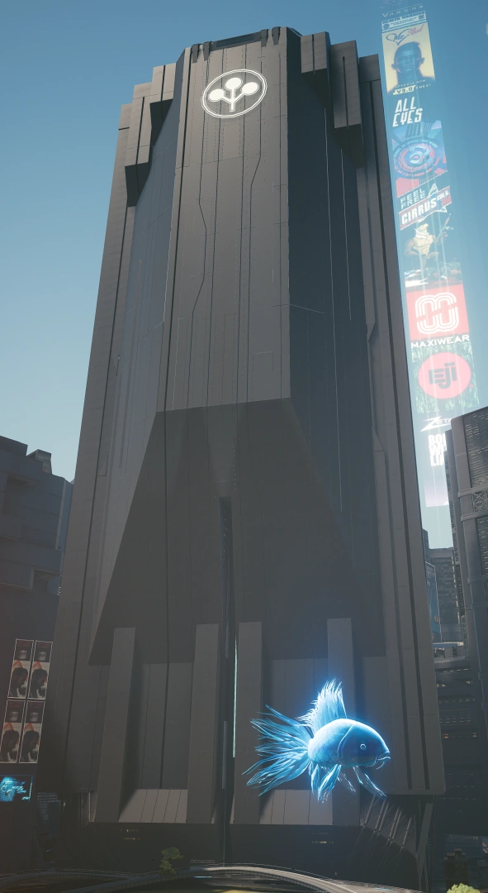

QUEM SOMOS NÓS?
Para alguns um monumento ao poder corporativo, para outros um símbolo de opressão, a sede de Arasaka na Costa Oeste é o coração das operações financeiras e militares da megacorporação em ambas as Américas.
Destruída em 2023 em um bombardeio realizado por Johnny Silverhand, a torre mais tarde se ergueu dos escombros como uma prova do triunfo final da corporação sobre seus inimigos. Se a história foi escrita pelos vencedores, então eles garantiram que esta nota de rodapé específica fosse escrita pelas mãos dos melhores arquitetos do mundo.
O majestoso monólito de aço e concreto de 2.034 pés (620 metros) eleva-se sobre o Corpo Plaza, lançando uma sombra sobre todas as ruas de Night City – tanto literal quanto figurativamente. As decisões que saem da fortemente vigiada Torre Arasaka determinam a vida de todos dentro dos limites da cidade.
"A paz não é um acaso. É um produto Arasaka."

Layout da Torre
A Torre Arasaka
A Torre Arasaka é um edifício único que se ergue a uma altura de 620 m (2034 pés) e possui 140 andares. Localizada na Praça Corporativa (Corporate Plaza), é o edifício mais alto de Night City.
Estrutura e Níveis
Seção de Amortecedores Sísmicos: Abaixo do subsolo, há um sistema de amortecedores sísmicos que protege o edifício contra terremotos.
Andares -07 a -06 | Controle de Operações Netrun: O nível de Operações dos trilha-redes (netrunners) da Arasaka, encarregados de proteger a integridade dos sistemas da empresa.
Mikoshi: Izanagi: As Operações de Netrunners também guardam o acesso ao Mikoshi da Torre Arasaka de Night City, uma instalação que armazena os engramas digitais das pessoas.
Andares -05 a -01 | Estacionamento: As áreas de estacionamento da Torre Arasaka.
Andar 01 | Saguão (Lobby): O saguão atrial da Torre Arasaka emprega um estilo neomilitarista simplista; o andar contém sofás, mesas e bancos contemporâneos e elegantes.
A entrada principal — onde os funcionários devem passar por um escâner corporal AIT — está sob guarda constante com guarda-costas dentro e fora, bem como uma ACPA (Armadura de Combate Pessoal Assistida) da Arasaka.
-----ENTRADA DA TORRE-----

Há banheiros e também corredores que levam a outras salas restritas.
Um grande telão acima dos elevadores exibe constantemente as conquistas da Corporação Arasaka.
Dentro do saguão, ouve-se um locutor transmitindo propaganda da Arasaka em japonês. Plantas japonesas holográficas com um brilho vermelho podem ser vistas ao lado dos sofás.
Cada elevador possui telas que exibem um documentário em duas partes sobre Saburo Arasaka, abordando seu tempo no Exército Imperial e sua ascensão como líder corporativo.
Andar 33 | Contrainteligência: O nível de contrainteligência abriga os escritórios das equipes operacionais dessa divisão da Arasaka. Susan Abernathy, diretora de operações, trabalha neste andar, assim como Arthur Jenkins, que tinha seu próprio escritório do lado oposto, com vista para a Praça Corporativa. (No caminho de vida Corpo, o escritório e a mesa de V ficam em frente aos de Henry, seu colega de trabalho). Este andar também possui uma sala para reuniões entre o alto escalão do grupo de contrainteligência e o conselho de diretores, além de incluir plataformas de pouso e estacionamento privativos para os AVs (Aeródinos) dos membros da divisão.
Escritório de Arthur Jenkins: Possui um estilo neomilitarista. Fica depois de uma antecâmara e é semelhante aos outros escritórios da torre. Lá dentro, há uma mesa e uma cadeira com uma tela de smart glass (vidro inteligente) atrás, que, quando recolhida, revela uma vista do Parque Memorial.
Garagem de AVs da Contrainteligência: Uma garagem contendo AVs pessoais estacionados pertencentes a vários membros da contrainteligência da Arasaka, incluindo Arthur Jenkins.
Andar 57 | Escritórios: Este andar contém diversos escritórios comerciais.
Andares 58 a 68 | Átrio: Os andares centrais da Torre Arasaka. A maioria das salas nestes níveis são escritórios e salas de reunião.
Andar 76 | Selva: Um ambiente autêntico de selva com flora e sons de criaturas da floresta, fortemente guardado e usado principalmente por membros do conselho da Arasaka, líderes de facções e pelo CEO na condução de reuniões importantes.
Andares 110 a 117 | Átrio Superior: Salas de alto nível contendo escritórios e salas de reunião para funcionários de alto escalão.
Andares 134 a 135 | Níveis Executivos Não Listados: Os Níveis Não Listados da Torre Arasaka estão disponíveis apenas para os membros mais altos da Corporação Arasaka, incluindo a família Arasaka. Nos dois andares mais altos, há uma seção em estilo clássico japonês com varandas de madeira e, no centro, um pequeno jardim. A arquitetura tradicional japonesa está presente em quase toda a parte nestes andares, pois eles também abrigam o escritório de Saburo Arasaka. Muito poucos sabem que este lugar existe, mesmo entre os que trabalham na Arasaka.
|